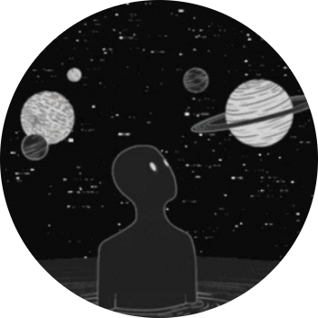

I bid you, Welcome
The future won't come for us. Never. Yet we must strive towards it. Always.

"Hey."
You've seen that opener before. So let's get to it: I'm Andrew — and I build things that probably shouldn't belong in the same portfolio.
Code, systems, worlds, and the words that hold them together.
I'm Ukrainian and French, fluent across four languages — and passable in a fifth, though I wouldn't recommend it. Somewhere between the text editor and the worlds that don't exist yet, that tends to show up in the work.
This portfolio is the longer version.
Scroll down to see where that lands.
Right now I'm focused on the space where those disciplines actually overlap — where a system needs a story to make sense, or a story needs a system to hold its weight. Most people pick a lane. I've never been particularly good at that.
What I'm building toward is work that doesn't need a genre label. Games that read like literature. Narratives that function like architecture. Code that serves something larger than itself, while still having a self. In short, a vague reflection of what I embody.
The distinction, if there is one: I don't treat any of these as separate crafts. They inform and interlap each other constantly.
Their cross-contamination is usually where the most interesting work comes from, speaking from experience.
What I work with — grouped by category.
Selected work — active builds, shipped products, and ongoing initiatives.
An AI-powered, controller-free motion tracking platform for AR/VR. Removes the barrier between user and virtual world — no sensors, no controllers — using computer vision and RAG-enhanced predictive modelling.
A dual-mode desktop platform for authoring, signing, and executing USB-bound Kernel bundles — sandboxed experiences cryptographically tied to the physical drive. When the drive leaves, the session ends. Zero trace on the host.
A post-apocalyptic narrative survival RPG set after the Yellowstone supereruption reshapes Vancouver's atmosphere in 2039. Society splits by elevation. The player leaves the fragile safety of a high-rise and travels upward. Project Director & Narrative Lead under KronStudios-Games.
A Backrooms-inspired first-person horror game by Null Concept. 15 mapped levels at initial release, each with unique hazards and audio ambiance, alongside three distinct entity types — the Howler, the Hounds, and the Duller.
Independent initiatives — no formal employment, no pretence otherwise.
PsyPunker
Sole architect and developer of a USB-bound cryptographic Kernel execution platform. Designed the full system architecture — signing pipeline, sandbox model, drive-identity binding — and built the TypeScript monorepo from scratch using pnpm and Turborepo.
EveryMotion
Founded and led an AI-powered motion tracking startup concept targeting AR/VR. Defined the technical vision (computer vision, RAG-enhanced prediction), built the public-facing web presence, and managed the early team and product roadmap.
KronStudios-Games — Above The Line
Co-founded and co-lead a community-driven game studio producing Above The Line, a post-apocalyptic narrative survival RPG. Responsible for overall project direction, narrative design, lore architecture, and team coordination. Established structured phase-based development, GitHub workflow, and a full Quartz-based GDD wiki.
Null Concept — Monochromality
Joined in the game's early development stages and accelerated its direction by introducing Backrooms lore frameworks drawn from deep study of the Backrooms Wikidot canon. Took on a broad cross-functional role spanning logistics, team coordination, lore writing, gameplay oversight, partial voice acting, and translation. Stepped back due to sustained deadline failures and diverging creative vision within the team.
REIU-V — SCP Roleplay Server
Founded and personally maintained an SCP-themed roleplay Discord community that grew to ~150 members during my tenure and continued accelerating to 900+ after departure. Managed server infrastructure, community moderation, and narrative frameworks. Left following ideological divergence with the other lead members — a clean exit that preserved both community health and personal integrity.
Independent · Backrooms Wikidot · REIU-V · Personal
Writing has run as a parallel thread across almost every initiative. The first serious application was the REIU-V community: founding the server demanded already-established lore fluency, and the community's longevity owed a significant part to original in-universe documents written in clinical SCP format — technical protocols, anomalous research logs, consciousness-overwriting procedures — work that required both narrative precision and systemic world-coherence.
Active on the Backrooms Wikidot Feb–Aug 2025: published articles, collaborative pieces, and contest submissions including the Despair Writings contest. Most prominent published work: Level 360 ↗.
From late 2025: a shift into novel and screenplay writing. A Sound Sinner — a Tarantino-structured post-apocalyptic screenplay following a mute gunslinger across a prion-ravaged America. Information Paradox — literary fiction, quieter register. Running concurrently: the Above The Line prologue and story summary, the narrative foundation before a single line of code existed.
Subject To F.U.N (Fourth-Wall Understanding Network)
A second KronStudios concept developed in parallel with T||RUTHLESS — a fourth-wall-breaking action puzzle thriller in the vein of Portal and The Stanley Parable. The title itself was a sarcastic joke built into the premise: a test-subject game where the game would actively fight the player, override controls, and mock failure in real time. Never reached a single line of production code. Revision 0.01 is the entire paper trail it left behind.
T||RUTHLESS — First KronStudios Initiative
Founded and directed the first KronStudios initiative: a narrative-driven UE5 shooter built around a semi-free-choice storyline system. The title was a deliberate dual-read — Ruthless on first glance, Truthless on closer inspection — embedded into the story itself: a soldier named Rad Bronx, brainwashed and weaponised by the very regime he serves, slowly uncovering the truth about his identity, his father's disappearance, and a century-old government conspiracy through a covert intelligence unit called I.R.I.S. Served as Project Manager and Head UE5 Developer across a team of ~15, producing a full GDD (Rev. 0.15) and a chapter-by-chapter storyline addendum. The project burned out before a playable build. The foundational lesson in community-led development — and the one that shaped everything after.
"Everything I make is an argument that these things belong together."
— Andrew Pie
Open to freelance, internships, and collaborations.